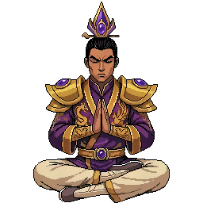

Two crossed elliptical orbits sweep crimson orbs and crystal shards around the cultivator. They grow as they swing to the front and pass behind the body on the far arc. Depth is carried by scale alone, no transparency. Final art would be PixelLab sprites dropped into these slots.
Rings
"Both" = Crimson Aura (crimson) and a Heavenly Qi ad-boost (gold) running at the same time, sharing the orbit instead of fighting over one halo.
Demonstrate the cues
Toggle occlusion or depth off to feel how flat it gets without them. That gap is the whole illusion.
What to look for: a body brightens and grows as it swings to the front (bottom of its arc), then shrinks, dims, and slips behind the cultivator at the top. Counter-rotating rings at different tilts give the "armillary" sense of life.